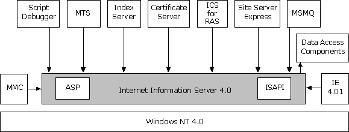
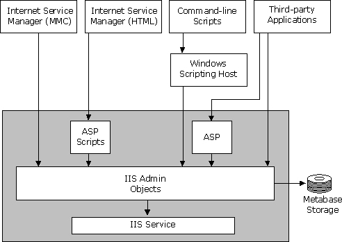
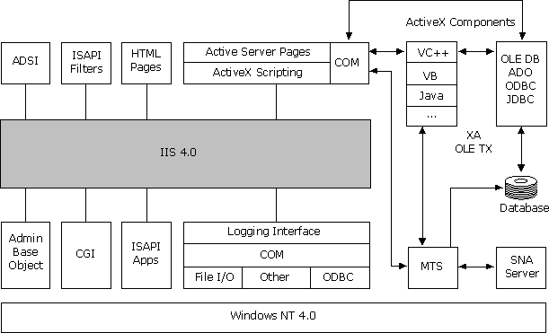
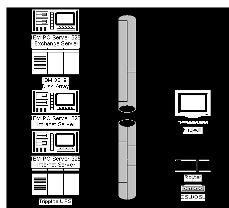

|
| ||
|
| ||
Microsoft Corporation
October 9, 1998
 Download this document and all
sample documents in Microsoft Word (.DOC) format (zipped,
339K).
Download this document and all
sample documents in Microsoft Word (.DOC) format (zipped,
339K).
Contents
Understanding IIS
IIS Architecture
Overview
Administrative
Architecture
Programmability
Architecture
Preparing to Migrate Services to IIS
4.0: Developing the Project's Vision
Creating A
Vision/Scope Document
Writing the Vision
Statement
Creating the
Conceptual Design
Writing the High-Level
Risk Assessment
Preparing to Migrate Services to IIS
4.0: Planning the Migration
Defining Project
Structure
Gathering Information:
Surveying Your Current Network and Server Environment
Conducting a Gap
Analysis
Defining the Service
Offerings
Review Operational
Standards
Capacity Planning
Building the Master
Project Plan
Staff Resources
Developing Test
Plans
Preparing the New Windows NT 4.0
Servers
Back Up the Source
UNIX Server
Recommended OS
Updates
Configuring Security
Settings
Setting Up Windows NT
Permissions
Installing Tools and
Utilities
Populating Directories
with Web Content
Migrating Web Server Configuration
Settings
Migrating from
Apache
Migrating From
Netscape Enterprise Server
Migrating
Administration Settings
Migrating Program
Settings
Server Status
Settings
Content Management
Settings
Web Publishing
Settings
Agents and Search
Settings
Auto Catalog
Migrating Applications
Migrating CGI
Applications Overview
Comparing CGI
Applications to Active Server Pages
Migration
Strategies
Migrating to Active
Server Pages
Migrating Common CGI
Applications to ASP
Tools For Application Migration
ASP Development
Tools
ActiveX Component
Development
Testing and Troubleshooting
Unit Testing
Integration
Testing
Application
Testing
Pilot Testing
Deployment
Deployment
Planning
Taking the New Windows
NT Server Live on the Network
Monitoring
Post-Deployment Performance
Monitoring User
Satisfaction
UNIX to Windows NT Migration
Resources
Books
Training
Web Sites
IIS is a core product, which means that it is designed to work closely with many other products, including all products in the Windows NT Server 4.0 Option Pack. Figure 1 shows the relationship between IIS and other products installed as part of the Windows NT Server 4.0 Option Pack.

Figure 1. IIS Architecture
The standard Internet Services (FTP and Web servers) reside in a process called Inetinfo. In addition to the Internet services, this process contains the shared thread pool, cache, logging, and SNMP services of Internet Information Server. File Transfer Protocol (FTP) is the protocol used to transfer files between two computers on a network that uses Transmission Control Protocol/Internet Protocol (TCP/IP). FTP was one of the earliest protocols used on TCP/IP-based networks and the Internet. Although the World Wide Web has replaced most of the functions of FTP, FTP is still a reliable way to copy files from a client computer to a server over the Internet.
Internet Information Server is integrated with Microsoft Windows NT Server. IIS uses the same directory database (user accounts) as Windows NT Server. Using the same directory database eliminates the need for additional user account administration. Internet Information Server administration also uses existing Windows NT Server tools such as Performance Monitor, Event Viewer, and Simple Network Management Protocol (SNMP) support to maintain similar administrative procedures. In addition, the following products are tightly integrated with IIS:
IIS provides a comprehensive set of tools for managing the Web server and its components. Administrators can use the tools provided by IIS to manage the Web server or an independent Web site. In addition to these management tools included with IIS, you can create your own custom interfaces using the IIS administration objects (Admin Objects) that ship with IIS.
Figure 2 illustrates the administrative tools provided with Internet Information Server and how they interact with IIS Admin Objects (IISAO).

Figure 2. Administrative tools provided with IIS
The IIS Admin Objects are programmable COM objects that an ASP script or custom application can call to change IIS configuration values stored in the IIS metabase. For example, file and directory access permissions used by IIS are stored in the metabase. You can efficiently set these permissions for one or many files and directories with a simple ASP script. The Internet Service Manager snap-in to the MMC, the HTML-based version of the Internet Service Manager, the Windows Scripting Host, and third-party administration applications use the IIS Admin Objects to manage IIS.
With the Internet Service Manager, a snap-in for the Microsoft Management Console, administrators can manage many Internet Information Server sites from a single location anywhere on the Internet. IIS also includes a browser-based version of Internet Service Manager. Using the Internet Service Manager (HTML), an administrator can configure IIS from almost any computer on the Internet or on a private intranet.
The Windows Scripting Host (WSH) is a language-independent scripting environment for 32-bit Windows Platforms. Microsoft provides both VBScript and JScript scripting engines with the Windows Scripting Host. Third-party companies provide ActiveX scripting engines for other languages such as Perl.
Web applications are maturing to become mission-critical, line-of-business applications. Before the Web, most applications were written and executed on stand-alone computers as single-user applications, and most shared server code was written and executed within databases. Web applications are deployed in a distributed, disconnected environment often running on many different data stores. IIS adds the necessary technologies to the Windows NT Server platform so that organizations can develop and deploy reliable and scalable multi-user Web applications.
Figure 3 illustrates the programmability architecture of IIS and the components described in this section.

Figure 3. Programmability architecture of IIS
Developing Web applications can be as complex as developing multi-user server applications. For example, when creating a multiuser application, developers must invest time building complex routines for managing server process pools, thread pools, database connections, user context, and transactions usually associated with server applications. IIS and the Windows NT Server 4.0 Option Pack eliminate much of this complexity by providing these routines within their server technologies. Along with Windows NT Server 4.0, these features provide developers with a platform for developing Web applications.
Using the ADSI administration scripts and the Windows Scripting Host, you can administer a Web site from the command line. The IIS SDK includes a set of sample scripts that you can run to perform many of the common tasks involved in maintaining an ISP or Web site.
ISAPI is an API for developing extensions to the IIS server (and other HTTP servers) that support the ISAPI interface. ISAPI filters are DLLs that allow pre-processing of requests and post-processing of responses, permitting site-specific handling of HTTP requests and responses. ISAPI applications are DLLs that can be loaded into the same memory space occupied by the Web service, and perform some server-side tasks as an interface between the user and IIS. The IIS Resource Kit CD contains a number of sample ISAPI filters and applications.
The IIS Admin Base Object is a fully distributable COM object. Its methods enable your application to manipulate IIS configuration keys and data in the memory-resident metabase. You can use IIS Admin Base Object to write applications, such as server administration or Web authoring tools, that check and update your server's configuration by manipulating keys and data in the metabase. You can also use the IIS Admin Base Object to store your IIS-related custom application configuration data in the metabase (with faster access) without filling up the Windows NT registry.
IIS logging enables you to track which users access your site and when they access your site. Tracking users helps identify security and performance issues. Logging can be directed either to a log file that can be processed offline and offers faster performance or to an ODBC Data Source Name for dynamic resolution.
Several IIS features enable customization of the logging information from an IIS Web site:
Using development tools such as Visual C++, Visual Studio®, or Java, you can develop ActiveX components and embed them in a Web page, adding a higher level of interactivity to the page. ActiveX components can be run on the server, on the client, or both. The IIS online documentation, for example, uses an ActiveX control called HTML Help in the left-hand frame of the browser for its table of contents. You can use OLE DB, ADO, or other database access methods to access information stored in a Microsoft Access- or Microsoft SQL-compliant language such as Visual Basic, C++, SQL, or Java.
ASP applications can add functionality to your Web pages as well. An ASP page is an HTML page that includes server-side script. After the server-side script on an ASP page runs, the results are returned to the client in the form of a standard HTML document.
The Common Gateway Interface (CGI) specification is a widely used method for creating executable programs that run on your Web server. Remote users can start these executables by filling out an HTML form or by simply requesting a URL from your server. Arguments following the question mark in the URL are passed to the CGI application as an environment string that is parsed and acted upon.
A vision/scope document guides your project team during the course of the migration. In theory, a project's vision and scope are at opposite ends of the spectrum, but they complement each other in the real world because each enables you to define the migration project. Creating both a vision and a scope document for the project is key for a successful Web server migration.
The steps in creating a Web server migration vision/scope document are:
The vision statement is a high-level visionary view of your reasons for wanting to migrate a Web server from UNIX to Windows NT Server, and a broad description of your expected outcomes from the migration. The vision statement should clearly outline why the project was conceived and broadly define the overall results of the successful migration.
The vision statement is owned by the project's leader or manager, and should be developed with input from the team members. Get the vision statement approved by your executive management to ensure that migration results are consistent with expectations.
Never underestimate the difficulty of writing a comprehensive and usable vision document. The process of writing this document cannot be considered an unnecessary exercise or delegated to just any member of the team. The vision statement should reflect the enterprise-wide goals and objectives of everyone involved, including upper management.
The vision statement should be SMART: Specific, Measurable, Achievable, Realistic, and Time Oriented. The following table provides a definition of S-M-A-R-T.
S-M-A-R-T Definitions
| Action | Definition |
| Specific | Specify results to be achieved (for example, what action will be taken or what application will be deployed). |
| Measurable | Clearly specify what will be achieved (for example, the number of seats deployed or the number of business units completed). |
| Achievable | Identify what the enterprise will achieve by this action (for example, ease of use and management, higher network throughput, and a complete set of tools for developing and managing intranets). |
| Realistic | Establish realistic outcomes based on company resources and project parameters. |
| Time Oriented | Set a realistic time frame to achieve specific goals (for example, will commence on X date, and complete on Y date). |
An example of a S-M-A-R-T vision statement might be the following document from Contoso Pharmaceuticals, a fictitious company:
Contoso Pharmaceuticals will replace its current UNIX Web server environment with a more efficient and flexible solution that will maximize competitiveness in our industry while reducing operational costs. Microsoft Windows NT Server 4.0 has been selected to achieve an enterprise Web server solution. Contoso Pharmaceuticals will initiate a scheduled deployment program for all four Web servers by 3Q99.Contoso Pharmaceuticals will reduce the overall cost of operations by migrating from the current UNIX system to a Windows NT system, which will decrease administrative costs and improve customer responsiveness. Contoso Pharmaceuticals will implement a global Windows NT domain model in conjunction with this project.
Because our company's current Web servers primarily run Sun Solaris, implementation will require a conversion and coexistence infrastructure to seamlessly move existing Internet and intranet sites to the new platform. To accomplish this, the company will use Windows NT Server 4.0 and specifically apply the third-party UNIX conversion tools.
The vision statement establishes parameters for the entire planning and deployment process. It should not be hurried, nor should it be left to the last moment. The process of writing the vision/scope document should begin early because it is key to determining the outcome of each phase.
The project scope document expands on the vision statement with specific details, including business reasons for deployment, features, resources, and schedule framework. As with the vision statement, the project scope presents a high-level view, but it also provides sufficient detail to direct and guide deployment.
Vision specifications in the scope document will be expanded during deployment. The scope document should be no more than three pages long.
Be sure your project scope document includes:
It's essential to have a clear understanding of the business drivers behind your deployment of Windows NT Server.
Business drivers are compelling, enterprise-level changes that can be achieved by deploying new technology. Here are examples of business drivers that apply to a migration to Windows NT Server:
It's important to identify any fixed deployment dates in the vision/scope document and record the business reasons for them.
Critical dates generally focus on business events such as year-end closing, funding availability, new applications, and other essential information such as specific costs, schedules, or features. An example of a critical date might involve a business unit that must deploy before a year-end closing in January but needs specific features to accommodate its operational needs.
When you write the project scope document, determine any company-related dates or scheduling constraints and amend your deployment schedule as necessary.
Include a list of project assumptions, constraints, dependencies, and anything else that is required or assumed necessary for successful deployment. It's important to list and examine your assumptions early. Mistaken assumptions discovered during the pilot, controlled introduction, or actual deployment could cause significant and costly delays in enterprise-wide implementation.
Here are some examples of assumptions you might make that would require verification:
The vision/scope document is the first written commitment made to the planning team, executives, and IT management. It should:
The vision/scope approval meeting should focus on the vision/scope document and its supporting information. Planning a vision/scope approval meeting involves:
- Planning team members
- Managers with approval authority
- Information technology and MIS management
- Other service providers or vendors
- Participant substitutes
Approval and formal sign-off of the vision/scope document provide a milestone for moving to the next activity. Approval is a fundamental building block in the overall planning and deployment of Microsoft Windows NT Server. At this point, the team should have identified and handled any major considerations or enterprise policy issues. Other issues, such as company-specific wording or expressions of company policy, should also have been approved. Present the document in a final design format suitable as a company document for archiving.
Present the final vision/scope document to all participants to ensure all departmental requirements are met. Include one (or more, as appropriate) signature blocks for the appropriate signers. Have appropriate parties sign the document, and make copies and distribute them to all participants and any other departmental managers who require knowledge of the approval. Prepare a completed copy for senior management and archive the document in the appropriate company location.
Download and complete your own vision/scope document (zipped, 6K).
The conceptual design graphically depicts the vision and scope of the proposed Microsoft Windows NT Server network. The diagram should show the relationship of Windows NT to other existing server environments as well as such UNIX servers as Solaris and HP/UX. This diagram should be expanded during planning and development activities.
At this stage you are most interested in graphically representing the interrelationship between the existing and new server environments, especially how Microsoft Windows NT Server will connect to points within the existing server environment.
You can use details from the vision/scope document's deployment objectives to provide specific information in the conceptual design. Here is a sample conceptual design:

Figure 4. Sample conceptual design
Download a sample conceptual design (zipped, 29K).
It's important for you to help your company develop a high-level risk assessment in close association with the vision/scope document and the conceptual design. Conducting all three activities in parallel with each other (or at least immediately sequentially) will help ensure that you have identified the most prominent high-level risks.
Identify possible risks as early in a migration as possible. By conducting a high-level risk assessment, you can isolate technical issues, financial constraints, process-limiting factors, and other problems before you begin the planning and logical design portions of the engagement. A sample of important issues to consider might be:
Download and complete your own risk assessment document (zipped, 7K).
Project Risks and Mitigation Methods
| Risk | Mitigation Methods |
| Server down time |
Utilize staging servers.
Make sure servers pass all tests prior to deployment. Test and debug all applications prior to deployment. |
| Applications not functioning correctly after migration |
Make sure you have adequate and skilled resources to
perform porting or migration work, especially for
mission-critical applications.
Test and debug all applications on a staging server running Windows NT Server 4 .0 and IIS. |
| Project not completed on schedule | During the planning process, be generous with your estimates of the expected work, and then allocate backup resources in the event that a task takes longer than anticipated. |
| Expenditures exceed budget | Estimate costs liberally, and allow for unexpected expenses; for example, hardware that malfunctions and must be replaced or software that must be upgraded (adding 10 percent to your base cost estimate would give you a reasonable cushion). |
| Applications or tools don't run on Windows NT Server or IIS | Make a careful inventory of applications and tools currently in use and replace any that are incompatible prior to system implementation. |
| Resistance to change by customers or others within the company | If possible, provide advance information about the project to all affected people, and involve them in the planning process. This will help give them a sense of ownership of the new system. |
The process of defining project structure involves:
The complexity of a large-scale Microsoft Windows NT Server integration or migration makes it advisable to divide project tasks by functional areas. This approach enables:
A Microsoft Windows NT Server migration team typically includes the following work groups:
Once the project team has been formed, it must be trained on Microsoft Windows NT Server. Two primary benefits of training are that:
You'll need to assess risks and develop corresponding mitigation strategies. It will be performed on a regular basis throughout the project duration. Information about risks enables the project team to take actions necessary to maintain the project schedule.
The Microsoft Windows NT Server readiness document provides the basis for assessing risks. Use this document to assist in developing mitigation strategies.
Download and complete your high-level risk and mitigation document (zipped, 6K).
At points during the planning and development phases, design or implementation strategies should be validated. This requires a testing environment. Because of the time lag usually attributed to ordering equipment, this process should begin as early as possible. This part of the project planning phase includes two sets of activities:
Along with creating the physical testing environment, you should create procedures to ensure that component testing is completed and that the results are documented.
As the project becomes operational, it is important to communicate its progress to potential users. This will enable them to begin deployment preparations and help establish appropriate expectations of how Microsoft Windows NT Server will change their server operating system activities. Customers are typically interested in:
A guiding principle in communicating progress of Microsoft Windows NT Server deployments is under-promise and over-deliver.
A communications plan requires such details as:
To create a communications plan, refer to communication plan types and distribution media in this document:
Download the communication types document (zipped, 13K).
This activity focuses on gathering the information necessary to making accurate design decisions. The basic steps are:
For further information on these topics, see the Resources section.
Documenting the current UNIX environment begins with describing where system resources and users are distributed within the enterprise. The types of information involved include:
This task seeks detailed information about where users will be located, including the geographic distribution of business units and the interoperability dependencies between departments. That information helps determine how to locate servers and how to synchronize the timing of implementations.
It's important to collect information about connectivity between physical locations and network services, including Windows NT Server domains. This information will help determine what constraints the Windows NT Server network must be built within, limitations on the design of a enterprise domain plan, and what services must be implemented or improved so Microsoft Windows NT Server will work effectively.
Information about the Windows NT Server domain structure and its condition is important, because accessing and sharing information about Windows NT Server requires a domain architecture for authentication. Documenting the current network environment requires descriptions of:
Understanding the physical network upon which Microsoft Windows NT Server will ride is critical to the design of the routing topology, server placement, and response time.
To document network topology you need to describe:
Network protocols provide connectivity between the workstation and the server. The most common protocol in use for client/server computing is TCP/IP. Although it is efficient, TCP/IP requires a system for allocating network addresses or use of services that appropriately assign addresses to workstations. Basic network protocol information includes the management technology used and the server location.
For compatibility with the existing UNIX environment, you should host Domain Name System (DNS) on Windows NT to provide integration with WINS. This will enable UNIX systems to access Windows-based systems by name and provide meaningful information in log files.
You should gather this sort of information:
Windows NT Server requires a domain architecture for authentication so that it can access and share information. Therefore, you should document the existing Windows NT Server domain structures to determine if they will provide coverage for the planned Microsoft Windows users.
To do that requires gathering this sort of information:
The goal of this activity is to expand the conceptual design (created during the envisioning phase) to develop a more detailed picture of the desired end state for the Windows NT system. The desired end state is similar to functional requirements, but it also graphically presents the long-term relationship of Microsoft Windows NT Server to other UNIX systems if any exist on the current network and will not be replaced with Windows NT. This diagram will include Microsoft Windows NT Server locations and the interaction of other operating systems. It should also include interactions with other systems for directory synchronization.
This activity should result in:
The goal of this activity is to compare the current networking environment with the desired end state and identify all high-level activities that will close the gap.
Documenting infrastructure readiness requires using network infrastructure information gathered during the information gathering phase. The state of the environment should be compared to the information in the Microsoft Windows NT Server network dependencies document.
Each item that needs additional work should be captured and carried forward to the project plan creation step. For help in documenting this information, use the Gap Analysis checklist.
During this phase you will identify the systems required to enable Microsoft Windows NT Server to coexist with the existing UNIX environment, using the documentation that was gathered during the previous information-gathering phase. Each high-level section that is identified for requiring additional work should be captured and carried forward to the project plan creation step. The following areas should be evaluated:
When migrating services from UNIX to Windows NT, it may be easiest to move individual services one at a time. To ease the migration, clients should refer to the system with the desired service by a name based on the service rather than the physical machine. For example, a UNIX system providing corporate mail and Usenet news might be accessed with the name unix01.example.microsoft.com. To make this easier, define several aliases so users access mail with mail.example.microsoft.com and access Usenet news with news.example.microsoft.com. This way, either Usenet or e-mail can be moved off the system, the DNS name can be changed to point to the Windows NT Server, and users can continue to access the service without any impact.
Security Database
Companies maintaining both UNIX and Windows NT Server
systems must deal with two or more separate security
databases containing information on users and groups. UNIX
uses either a local security database or NIS/NIS+, which
are both incompatible with the Windows NT Server local
security database and Windows NT Server domain security
database. This is discussed further in the UNIX/Windows NT Integration SDK  .
.
If users will access secure services on both systems, a solution is needed to maintain up-to-date information on both systems. One solution is to add software to the UNIX systems that enables them to join the Windows NT Server domain, using a product such as Advanced Server for UNIX (ASU) from AT&T. If this isn't possible, the alternative is to manually maintain the disparate security databases through processes that ensure changes occur on both systems and limit using such options as expired passwords.
File Services
Access to files that reside on a file server is typically provided through the network file system (NFS) file sharing protocol.
As a company converts clients and servers to Windows NT Server, it may continue to need access to the files on NFS. If this is the case, some of the options available include: moving the files to a Windows NT Server and loading NFS server software, loading an NFS client on those systems requiring file access, using an NFS gateway product on Windows NT Server such as the one available from Intergraph, or using a file server that understands both protocols (such as those from Network Appliance).
Users in existing UNIX environments are accustomed to a particular level of functionality. Functionality is usually defined as a combination of functions provided by a commercial operating system, third-party application software, and additional custom features.
User functionality provided by existing systems should be compared to the functionality that will be provided by the client against the new Windows NT Server back end. If specific existing features are not available during migration or are taken away altogether, note these features and place them in the project plan for later resolution.
Compared to traditional UNIX operating systems, Microsoft Windows NT Server provides a significant number of additional functions for users, administrators, and operations personnel. Some of the new functions can be enabled with very little additional cost, whereas others will require more effort.
For more information, see the
Resources section of this document. For examples of IIS
solutions, see this information on
Microsoft's Web site  .
.
The service offering supplies a detailed list of the functionality to be implemented in this version of the Microsoft Windows NT Server operating system. The list of functionality to be implemented may not be the full list identified in the gap analysis, but may instead be the minimal amount of functionality required to start the integration or migration. Additional functionality can be provided in subsequent phases.
The use of phases, or versioning, enables the project team to implement functionality in stages, keeping the scope manageable and delivery on a set schedule. Once the functionality of a particular version has been determined, it should be frozen and clearly communicated to customers. Requests for additional functionality should be noted, but slated for inclusion in later releases.
Decisions to provide specific functionality should be based on a formula of value perceived versus the cost to implement and support.
This activity:
This process determines what functions will be delivered as part of integrating Windows NT Server in a UNIX environment or in migrating from UNIX to Microsoft Windows NT Server. To assist in determining which functions and services will be included, rank the entire list of possible items into priority groups. Then evaluate those in the highest groups to determine the cost of implementation and ongoing support.
Start a secondary list for items to be included in the subsequent version. Naturally some items will have a higher priority as a required function. Without these functions, the system will not operate.
It is usually helpful to separate the functions into groups such as:
During this activity, you will specify performance criteria for system operations. Common criteria include:
In conjunction with identifying the performance criteria, define certain constraints likely to affect the data that will be traveling through the network. If these constraints are not defined, it is difficult to accurately design the system. Items that are usually constraints are:
Once the team has agreed to the functionality that will be delivered, the project manager and other influential managers who have a significant stake in the outcome of the project should sign off.
Download a sample service offering document (zipped, 6K).
The planning phase of the project is an excellent time to review your current and future operational standards and procedures. Windows NT Server and IIS will change the way you develop and administer your Web servers. We recommend that you review the following operational standards and make a list of any adjustments that might need to be made to them after the migration is completed:
Policy and Procedure Review
| Policy or Procedure | Issues |
| Content Publishing |
General guidelines, such as page formatting and
information type
Instructions on how to publish a Web page to be served by IIS Directory access policies for distributed authoring and versioning (DAV) |
| Disaster Recovery |
Recovery plans
Off-site or on-site spare server location Spare server availability Rehearsal provisions |
| Internet Services |
Contact person for each service
Access control |
| Maintenance |
Preventative maintenance procedures
System monitoring policy and tools |
| Network |
Escalation procedures for downed links
Contacts for network services |
| Redundant Servers |
Fault-tolerant servers
Load-balancing servers |
Migrating your Web server to Windows NT Server will prompt some questions about how to best plan your hardware requirements. PC server hardware can be purchased from a variety of vendors, with many possible configurations available from each vendor. The following section will aid you in selecting the correct server hardware for your needs.
The minimum hardware requirements for running Windows NT Server 4.0 with IIS 4.0 are:
The recommended server requirements for running Windows NT Server 4.0 with IIS 4.0 are:
Disk space requirements for installing IIS 4.0:
Often the importance of the processor speed is overemphasized in selecting the correct hardware for a server. If a server is hosting a site that primarily contains static HTML pages and images, chances are that even an older processor can max out the full network bandwidth available to it. A fast processor does not always equal a fast server, especially if the network it is connected to is slow or poorly designed.
If your servers host large sites with high volumes of traffic, you need to be concerned about processor speed, especially if the site contains dynamically generated content or application logic. Dynamic content and heavy use of Active Server Pages will always require a more powerful processor. Bottlenecks on static HTML pages usually reside in network components, slow hard disks, and lack of memory, which can all be gradually upgraded.
Should you wish to add another processor to your server at a later date, remember that all processors in a single server still share the same system resources. Adding another processor for a total of two could improve IIS performance by roughly 50%, and from two to three an additional 25%.
System Bus
All PCs rely on a system bus to transfer data among the various system components. Today most computers that are intended for use as servers are based on the PCI system bus, which runs at 50 to 66 MHz. In the future, we should see PCI implementations at 100 MHz or more. With 64-bit-wide data paths, current versions of the PCI bus can transfer data at rates in excess of 500 Mbps. The nature of a Web server is to quickly take requests, process them, and deliver the requested content as quickly as possible, so it is wise to get a system with the fastest system bus available.
Memory
As a rule of thumb (as long as your server's performance is not limited by its bandwidth), the more RAM your server has the better it will perform. One way to determine the amount of RAM needed in any given system is to add up the RAM requirements of all the applications and services you need to run, add that to the sum of the size of your commonly used files, add the RAM required by Windows NT Server and IIS, and double it. The only way to accurately determine if your RAM requirements are being met is to monitor system performance on an ongoing basis and add RAM as needed.
Hard Disks and Controllers
Older IDE controllers are too slow for Web servers, and are not recommended for Windows NT Server. IDE is limited to two or four disks per controller, whereas SCSI is limited to 7 or 15, depending on which standard you choose.
Among SCSI controllers that are recommended for Windows NT Server, there is a wide range of characteristics, including controllers that support RAID in hardware, controllers with large RAM caches, etc. The SCSI standard has evolved in to several forms:
SCSI-1 (de facto) Data path width, bits = 8 Maximum transfer rate, Mbps = 5
SCSI-2 Data path width, bits = 8 Maximum transfer rate, Mbps = 5
Fast SCSI-2 Data path width, bits = 8 Maximum transfer rate, Mbps = 10
Fast/Wide SCSI-2 Data path width, bits = 16 Maximum transfer rate, Mbps = 20
Ultra SCSI-3 Data path width, bits = 8 Maximum transfer rate, Mbps = 20
Ultra Wide SCSI-3 Data path width, bits = 16 Maximum transfer rate, Mbps = 40
Make sure your disk drives are matched to your controller. It is pointless to buy a disk that supports high transfer rates and put it on a controller that does not. In addition it is also a bad idea to put slow devices and fast devices on the same bus, because errors can occur.
After system functions have been identified and the gap analysis has been completed, an overall project plan can be constructed. The project plan provides more detailed information on timeline and overall implementation costs. It is not uncommon to revisit system functionality for future versions after compiling a project plan.
Building the master project plan requires:
The owner of the project plan is usually the person assuming the role of the project manager. The individual must be able to influence resource decisions and effectively track the work progress.
Project scope should be defined, first, by using the preliminary scope questions to assess customer needs and, second, by conducting a gap analysis to discover new areas of messaging functionality that the customer requires at the present time. Use the deliverables from the gap analysis as input to build the master project plan.
Once the owner of the project plan has been identified, it's time to start building the project plan. It is important that the project planner include estimates from those who will be actually performing the work, so that there is sense of ownership.
Items to be included in the project plan for each task include:
During this activity you will use the Sample
Project Plan  (.mpp
file) to assist you in developing a project plan specific
to your customer's requirements.
(.mpp
file) to assist you in developing a project plan specific
to your customer's requirements.
Note Once the project plan has been developed and project costs itemized, it is appropriate for the service provider to submit an additional proposal for work involved in the remainder of the project.
Once the project plan has been created and the project started, it is important to update the data on a regular basis. The project plan should be reviewed with the members of the project team on a weekly or biweekly basis to ensure accuracy. This will serve to determine early on whether the project is on time and on budget.
For help in documenting this information, use the Master Plan checklist.
Staff implementing a migration to IIS must have the following skills:
In addition to training the staff who will be performing the migration and administering the servers, you'll probably want to provide user training and support as well. To allow users to gain the most benefit from IIS tools and technologies, training should be offered on subjects such as creating ASP-based Web applications. For more information on available training, go to http://msdn.microsoft.com/developer/training/.
For information on other available training materials and
guides, go to http://mspress.microsoft.com/  .
.
You'll need to thoroughly test your newly migrated server and applications once the migration process is complete and before you deploy. You can develop solid test plans by keeping your project goals in mind and defining a test plan that measures your success at meeting them.
Unit testing, the first test phase, is conducted in a lab environment. Unit testing involves each server alone, outside the context of the network and other servers and operating systems with which it may coexist. If your migration involves multiple servers, you should migrate, test, and tune one server initially to ensure that it performs properly before proceeding to the others. This learning process will help improve your approach for migrating subsequent servers.
Once the server has passed unit testing, you're ready to evaluate it as a member of your network or server group during integration testing.
Prior to deployment on a production server, each application you migrate or port to IIS should be tested on a staging server running Windows NT Server 4.0 and IIS 4.0. It's best to begin this process well in advance of your final deadline for completion: as you know, Web applications can present unexpected problems. Following are a few examples of application tests.
Pilot testing involves a group of users who use the system prior to its full deployment to provide feedback on IIS features and functions. During an initial, pre-pilot phase, select a small group of users who have some technical savvy to try out the technology. You might not want to provide support during this phase because it can draw resources away from system development and affect your schedule. After making adjustments based on input from pre-pilot users you can begin the actual pilot. For this phase, a larger group of users should review and fully use the system features. These users should be at about the same technical level as your system users in general. During this phase, plan to provide support for all issues, errors, or problems reported by users. The support team can then report the issues to the design team if they require architectural changes. When changes are made to the system, the system should be completely re-tested.
Be sure to include the following in your pilot planning:
Regular backup procedures should be a part of every server administrator's day. It is best to back up the current UNIX source servers in the event that an unforeseen problem should arise during the migration process. The backup should be separate from your normal rotation and available on-site if you need to perform recovery during the migration. Be sure to properly label the backup medium so that it does not get mixed up with the regular backup group. We also recommend that you do not use a production server for the migration. Use a separate machine.
Microsoft makes software updates to Windows NT Server available in the form of Service Packs and Option Packs. These OS updates contain new features and services, upgrades to existing services, and fixes and patches to make your server run smoothly and more securely. It is important that you install the following recommended updates to ensure that your server's OS is up to date and secure.
You can download the latest Service Packs from the following URLs:
http://www.microsoft.com/windows/downloads/default.asp

Microsoft Windows NT Service Pack 3 
Microsoft Windows NT Server 4.0
Option Pack 
Microsoft Euro Currency
Support for Windows NT Server 4.0 
Windows NT Server and UNIX handle their respective user accounts very differently, complicating the integration of these accounts in a mixed environment. If you plan a multi-step approach to migrating from UNIX to the more secure Windows NT Server environment, you might find it necessary to use a mixed authentication scheme during the early stages.
Microsoft also developed the IIS 4.0 UNIX Integration SDK
to provide a foundation through which IIS can integrate
Windows NT Server authentication with UNIX authentication.
With the tools provided, users who have accounts on a UNIX
server can still access protected content on IIS in a
transparent manner. For more information about this SDK, go
to
http://www.microsoft.com/isn/hot_topic_unix_nt_interop.asp
 .
.
IIS provides three authentication schemes to control access to IIS resources: Anonymous, Basic, and Windows NT Challenge/Response. Each of these schemes has a different effect on the security context of an application launched by IIS. This includes ISAPI extension agents, CGI applications, IDC scripts, and future scripting capabilities.
Setting Anonymous Authentication in the Internet Service Manager means that IIS will not use any HTTP authentication mechanism to control access to resources on the machine. By default, when IIS is installed, it creates a user account called IUSR_<servername>, where <servername> is the name of the server on which IIS is running. This user account is added to the Guests group on the machine, which implies that its access to resources is limited. When an HTTP request that uses Anonymous authentication is received by IIS, IIS will impersonate the IUSR_<servername> account to execute any code or access any files that are involved in the request. This allows a level of security by limiting accessibility to such things as system files by an unauthenticated user. IIS is able to impersonate the IUSR_<servername> account because the user name and password credentials for this account are known by IIS.
You can change the account that is used for anonymous authentication in Internet Service Manager. You can also change the security privileges for the IUSR_<servername> account in Windows NT Server User Manager.
Important Be aware that any changes will result in changes to every anonymous HTTP request that is serviced by IIS. Also note that if the anonymous account configured in Internet Service Manager does not have the Log On Locally right (not a right given to Guest accounts by default on domain controllers), IIS will not be able to service any anonymous requests. The IIS installation specifically gives the Log On Locally right to the IUSR_<servername> account.
Most resources that allow Guests to access them, such as the IUSR_<servername> account, do so by allowing access to the special group Everyone. You can set permissions on files and other resources specifically to allow or disallow the IUSR_<servername> account to access them, but most people end up managing access by controlling access to the Everyone or Guests groups.
Note Because you can configure IIS to use an anonymous account that is different than the USR_<servername> account set up by default, wherever this discussion refers to the IUSR_<servername> account, you should think of it as a placeholder for the account name configured as the Anonymous Logon account in the Internet Service Manager.
Basic authentication is a scheme that causes the client to be prompted for a User name and Password that are then Base64-encoded and passed to IIS. IIS receives the user name and password credentials and verifies them against the Windows NT Server user database on the machine or the applicable domain controllers in any trusted Windows NT Server domains. If the credentials are valid, IIS will impersonate the specified user when allowing access to resources by IIS or any applications that the request is launching. Thus, the application being executed, whether it is an ISAPI extension a DLL, a CGI application, or a scripting mechanism, will be executed with the permissions of the corresponding user account passed by the Basic authentication.
Because Basic authentication provides the user name and password credentials to IIS, access to items that require credential knowledge can successfully be performed when using Basic authentication. For example, if an ISAPI application mapped a drive letter across a network, it would require knowledge of the current user's credentials. Because IIS is given the user name and password credentials as part of Basic authentication, this task will succeed if the account specified has access to the network resource.
Windows NT Server Challenge/Response authentication (often called NTLM authentication) is the most secure form of authenticating a user because the user name and password are not sent across the wire. Rather, the Windows Security Provider interface is used to provide an encrypted challenge/response handshake mechanism that is functionally unbreakable. The Windows security provider interface allows IIS to validate and impersonate the user. Unlike Basic authentication, NTLM authentication does not prompt users for their user name and password by default. The current Windows user account on the client machine is used for the NTLM authentication. Then, if this fails, it will prompt the user for the user name and password to be used. If NTLM authentication succeeds, the requested application or resource is executed in the context of the specified user.
Because of the one way encryption is used, NTLM authentication validates the user for IIS without providing knowledge of the user's password to IIS. Therefore, a full set of user name and password credentials is not available to IIS for doing such tasks as mapping a network drive. If an ISAPI application calls WNetAddConnection2 without specifying a user name and password, it will fail under NTLM authentication.
You can select any combination of Anonymous, Basic, and NTLM authentication in Internet Service Manager. If Anonymous authentication is checked, the request will try to be handled without any actual authentication and IIS will execute the request in the context of the global IUSR_<servername> account. If, for some reason, the IUSR_<servername> account does not have access to the resource, IIS will send an access-denied error to the client indicating that the client needs to use one of the other authentication schemes. This scenario could occur if you limited access to the actual ISAPI DLL file to a specific user, such as User1. IIS would receive the initial anonymous request and attempt to launch the ISAPI DLL under the IUSR_<servername> user context, only to get an access-denied error from the NTFS file system. IIS would respond to the client with a message saying that access was denied and the client needs to submit the request using either the Basic or NTLM authentication schemes (depending on which one is enabled, possibly even both). The client can then resubmit the request with the Basic authentication credentials or with the initial NTLM challenge/response sequence. If either of these responses provides validation of the User1 account, IIS will impersonate the User1 account and successfully launch the ISAPI DLL.
It is worth noting that if both NTLM and Basic authentication schemes are checked, IIS responds to requests indicating that both schemes are acceptable. It is up to the client to determine which authentication schemes it supports and to respond appropriately. For browsers such as Internet Explorer, which support both Basic and NTLM Authentication, they will respond using the first supported authentication scheme indicated by IIS. On IIS 1.0, when both Basic and NTLM authentication schemes were checked, Basic authentication was listed first. On IIS 2.0, NTLM is listed before Basic. The result is that for a server running IIS 1.0 using both, Internet Explorer will use Basic authentication. For an IIS 2.0 server using both, Internet Explorer will use NTLM authentication.
Many IIS applications access resources provided by other software components. For example, an ISAPI extension DLL may call an OLE Automation server from a third-party software company, or a CGI application may launch an applet built with Microsoft Visual Basic. These components may have persistent information stored in the registry that they require in order to execute properly. For standard desktop use of these components, the registry information is read from the profile of the user currently logged onto the Windows NT Server machine.
These applications often have problems when launched by IIS because the profile made available to an IIS application is that of the "default user." The default user profile is filled with information generic to all users, but, unfortunately, is specific to no user or users. Therefore, a component may run as expected when User1 executes it interactively on his or her desktop because it is reading information from User1's profile in the registry. The same application may not run at all from IIS because it will not have access to User1's profile. This is true even if IIS is impersonating User1's account using Basic or NTLM authentication.
Windows NT Server uses the concept of having multiple desktops on the same machine. A desktop can be thought of as the screen that you view when you are logged on a Windows NT Server machine. Your desktop receives all the mouse and keyboard messages that you create as the user in front of the machine, and it allows for applications to interact with one another to a certain extent. For instance, one application on a desktop can post messages to other applications on the desktop. Windows NT supporting multiple desktops implies that there are other desktops running; you just can't see them and you have no way of sending keyboard or mouse messages to them. This may seem like a futile concept, but, in fact, many applications that run as Windows NT Services require the capabilities that a desktop provides yet don't want to interact with the interactive user's desktop. Therefore, each service gets its own desktop that won't be interfered with by the currently logged-on user.
The effect of this, to IIS applications, is that the IIS service has its own desktop. If your IIS application interacts with a desktop in any way (for instance, if it displays a message box), it will display that message box on a desktop that cannot be seen on the computer's monitor. Similarly, an IIS application will not be able to send or post messages to an application on the interactive desktop. If your IIS application needs to interact with the interactive desktop, you should use another form of inter-process communication such as named pipes.
ISAPI Filter DLLs, not to be confused with ISAPI Extension DLLs, run in the original context of the IIS service. All services run by default under the Local System account of the machine on which they are installed. The Local System account has access to almost all resources on the local machine not specifically denied to it, and no resources on any other machines on the network.
Launching an OLE or COM object on a Windows NT Server 4.0 machine requires certain permissions. This is normally not an issue for most interactive users because the default permissions for launching and accessing OLE and COM objects on a Windows NT machine allow access to anyone logged on the local machine interactively. An IIS application, whether it is running in the context of the IUSR_<servername> account or an impersonated user account from Basic or NTLM authentication, is not interactively logged on. Therefore, the default permissions for launching and accessing OLE and COM objects will not allow an ISAPI extension DLL, CGI application, or Internet script to launch these objects successfully.
The utility DCOMCNFG on Windows NT Server 4.0 enables you to set the default permissions for all COM and OLE objects on your machine. You can use this utility to provide OLE and COM access to the IUSR_<servername> account as well as all user accounts that might be impersonated by your IIS configuration. You can even grant permissions to the Everyone group.
However, providing global access to all OLE and COM objects may not be in your best interest, so DCOMCNFG will also enable you to specify permissions for specific applications so you can provide access to only the applications you'll need to access from your IIS application. OLE and COM applications also have the ability to determine what permissions are associated with launching and accessing themselves. To do this from inside your OLE or COM server, see the CoInitializeSecurity function in Windows NT Server 4.0, as well as CoCreateInstanceEx (in particular, the COSERVERINFO and COAUTHINFO structures) for manipulating OLE access from the client side.
Distributed COM (DCOM), also referred to as Remote Automation, requires all of the OLE/COM permissions discussed above. In addition, it needs to access resources across the network. If a request is received using Anonymous authentication, the IUSR_<servername> account user name and password credentials will be used to connect to the remote DCOM server. Unless your IIS server machine is also a domain controller, the remote machine by default will not know who the IUSR_<servername> account is (it only exists on the local IIS server machine). Adding access and launch permissions to the group Everyone does not help in this case because DCOM will not map access by an unknown account to the guest account in the same way that the Lanman Server service does for file sharing. The DCOM server machine must explicitly know the account that is being used.
To deal with a scenario where you have IIS applications accessing resources (including DCOM resources) on remote machines, you need to have all the machines involved participate in a domain relationship. Then, in Internet Service Manager, you can change your anonymous account to an account in the local or trusted domain. All machines in the domain structure will recognize the account, and can explicitly add/delete access to their network resources for that account or any groups of which that account is a member.
Be aware that if Basic authentication is used for an IIS request, access to network resources (including DCOM servers) will be done in the context of the user whose credentials were passed with the request. If the user specified does not have permissions to launch or access the DCOM server, the request will fail.
If the IIS request is validated using NTLM authentication, the impersonation level does not imply knowledge of the user name and password credentials. Therefore access to network resources, regardless of the permissions on the resource, will be denied (with the exception of NULL Session resources).
For more information, see the Security and Cryptography
section of the Web Workshop, and the
Security Advisor site  .
.
Depending on your particular requirements for allowing or denying access to server resources, you'll need to set up necessary user and administrator accounts. Administrator accounts are reserved for those who need system-level access to the entire server and user accounts for restricted user-level access. Each type of account has a set of permissions that allow or restrict certain actions.
Delegating administrative rights to customers in an ISP environment is challenging in light of security considerations. An administrator needs to ensure that each customer can administer only his/her own Web site. ISPs who are hosting multiple sites on a single server can use IIS' Web Site Operators feature to give the individual site administrators complete control over the properties, applications, and security of their site -- without jeopardizing the security or configuration of other sites running on the same server. A Web Site Operator is not permitted to change bindings or port numbers, configure anonymous user names and passwords, change the identification of the Web site, throttle bandwidth, change accounts on the server, add virtual directories, configure process isolation or ISAPI filters, or stop, pause, or restart a site.
IIS provides several new access levels. The following values can set the type of access allowed to specific directories:
Read
Enables Web Clients to read or download files stored in a home directory or a virtual directory. If a client sends a request for a file that is in a directory without read permission, the Web server will return an error.
Write
Enables Web clients to upload files to the enabled directory on your server, or to change content in a write-enabled file.
Script
Enables trusted applications to run in this directory without having execute permissions set. Use the script permission for ASP scripts, Internet Database Connector scripts, and others. Script permission is safer than execute permission because you can limit the applications that can be run in the directory.
Execute
Enables Web clients to run programs and scripts stored in a home directory or a virtual directory. If a client sends a request to run a program or a script in a directory that does not have execute permission, the Web server returns an error message.
Log Access
Enables the recording of visits to a site to a system's log file. You must enable logging for the Web Site to establish a log file.
Directory Browsing
Enable a hypertext listing of the files and subdirectories in this virtual directory. A hypertext directory listing is generated automatically and sent to the user when a browser request does not include a specific HTML filename and when no default document is provided for in the specified directory.
When migrating your Web server from UNIX to Windows NT Server, make an inventory of all the third-party tools and utilities that you currently use on your UNIX server and locate their Windows NT Server counterparts if you intend to continue their use on your new Windows NT Server. Many UNIX scripting engines are available for Windows NT Server as well as a great deal of third-party tools and utilities that are available for UNIX. This section should help you get a head start on tracking down and installing these tools.
Perl
Perl scripting engines are currently available in several forms for the Win32® platform. ActiveState Tool Corporation provides three options for running Perl scripts on Windows NT Server: Scripts can run as CGI executables (Perl for Win32), as DLLs within the IIS process (Perl for ISAPI), or within the ASP environment (PerlScript). The ASP environment option provides the best performance, but you will need to modify your scripts to run within it. If you want to migrate a script with minimal or no modification, PERL for ISAPI offers best performance. The advantage of Perl for ISAPI is that a separate process is not generated for every request, as is the case for CGI executables on Windows NT Server.
For more information and to download a Win32 Perl scripting engine go to:
Tcl/TK
Sun has officially stopped their efforts to update Tcl/TK and has passed the torch on to several other groups. Currently you can get information on and download Tcl/TK for Windows NT Server from the Tcl/TK Consortium and Scriptics Corporation:
Python
You can obtain information on Python for Windows and download a Python scripting engine for Windows NT Server from:
Gzip AND TAR
Gzip, the popular UNIX compression utility, is available for Windows NT Server. This can come in handy when transferring large chunks of Web content from UNIX Web servers and uncompressing them on Windows NT Server. Both TAR and Gzip support are available in WinZip 6.3 as well as several other useful formats such as UUencode XXencode, BinHex, MIME, and UNIX compress:
FTP Clients
There are many different shareware and freeware FTP clients available for download on the Web. Each one takes advantage of a different UI and has different features. You can download an FTP client from:
When you install IIS 4.0 for the first time it creates a default directory structure for your HTTP server at C:\\Inetpub\wwwroot. This directory is the root directory for your "default Web site". It is best to rename the "default Web site" to better reflect the name of the newly migrated site. This directory will function as the root directory for your Web site by default.
IIS enables you to store content for a Web site outside of the wwwroot directory tree, using a feature called Virtual Directories. Virtual Directories enables you to store Web content such as HTML files, scripts, images, and other files associated with your site, in any directory in your Windows NT Server. Virtual Directories can be located either on your primary server or another computer on your network. The only restriction in using remote virtual directories is that the network drive must be in the same Windows NT Server Domain as the IIS system.
Virtual Hosts/Servers are very common for ISPs and volume hosting environments. IIS 4.0 supports Virtual Hosts/Servers in two ways. IIS 4.0 will support multiple Virtual Servers with multiple IP addresses and multiple Virtual Servers on a single IP address. The method you choose depends on how your current server infrastructure has been established. IIS 4.0 supports multiple virtual servers on a single IP address through the use of a host header that most new browsers support. For a browser to support host header names, the browser must be HTTP 1.1-compliant. If you wish to target browsers that do not support HTTP 1.1, you can use cookies or URL-munging to enable the browser to correctly view multiple virtual servers running on a single IP address. For more information on configuring virtual servers, see the IIS documentation.
Once you have properly configured your IIS settings and established a directory scheme, you can copy content from the source UNIX server to the newly prepared Windows NT Server. You need to choose the transfer method that works best for your environment. Depending on your situation, it might be best to run a batch UNIX2DOS shell script to avoid "control M's" from appearing at each carriage return in the HTML files on the Windows NT Server.
A simple approach to moving the entire Web site intact is to run TAR on the entire site, FTP it to the new Windows NT Server, and use a de-compression utility such as WinZip to "un-tar" the Web site in the correct directory. This approach enables you to easily transfer the entire Web site directory tree in one file. Remember to transfer any CGI scripts that you plan to keep using on Windows NT Server and to follow similar steps as above.
Migrating the server configuration settings from Apache to IIS 4.0 is a simple process. The most significant difference between setting your server configuration on Apache and IIS is the fact that IIS uses a graphic administration tool, Internet Services Manager module of the Microsoft Management Console, instead of a plain text file. Each of the configuration settings contained within httpd.conf, srm.conf, and access.conf are listed in the table below. The compatibility or counterpart of each setting in their respective configuration files is listed next to the setting in the table below. Be sure to migrate all of your server settings to ensure proper performance.
For in-depth documentation on the configuration settings and capabilities of IIS 4.0, see the IIS documentation, the Internet Information Server Resource Kit, or one of the many books available from Microsoft Press and other publishers (linked to in our Resources section).
Migrating Apache httpd.conf Configuration Settings
| Setting | Migrates | Comment |
| ServerType | No | IIS 4.0 always runs in Stand-alone mode. Once IIS 4.0 is started, its process will remain in memory and listen to the set HTTP port. You cannot configure IIS 4.0 to dynamically load as with an inetd server on Apache. |
| Port | Yes | You set the port that your Web server should listen to by right-clicking a Web site in the MMC, choosing Properties, and selecting the Web Site tab, and entering a port number in the field labeled TCP Port. |
| HostnameLookups | Yes | IIS 4.0 log files capture the IP addresses of visitors to your Web site. If you wish to look up the host name of a given IP address, you'll have to use the Usage Import tool that is included in the Site Server Express component of IIS 4.0. |
| User/Group | No | IIS 4.0 does not run under a user account or group. You need to be logged in as an administrator or operator to start and stop the IIS 4.0 service, but the process does not retain your permissions. |
| ServerAdmin | No | IIS 4.0 does not have a configuration setting for displaying the administrator's name and contact information. This information could be added to your pages using ASP if needed. |
| ServerRoot | Yes | To migrate this setting, right-click a Web site in the MMC, choose Properties, and select the Home Directory tab. Specify the default directory for your Web site as well as access permissions in the fields on this tab. |
| BindAddress | Yes | IIS 4.0 enables you to specify Virtual hosts. To migrate this setting, right-click a Web site, choose Properties, and select the Web Site tab. Click the Advanced button on the Web Site tab and add the correct IP address and TCP Port. |
| ErrorLog | No | All errors with the Inetinfo process are logged to the Windows NT Server event log and do not need to be specified in the Web server configuration. |
| TransferLog | No | IIS does not use a transfer log. |
| PidFile | No | IIS 4.0 does not offer the option to log its process ID to a file. |
| ScoreBoardFile | No | IIS does not have a Scoreboard file. |
| ServerName | No | The host name for your Web Server is stored in your DNS server and is not required in the IIS 4.0 configuration settings. Your IP address and HTTP port is still required in IIS 4.0 for your server to serve content. |
| CacheNegotiatedDocs | No | IIS 4.0 enables you to specify when content expires in a browser or proxy cache. To migrate this setting, right-click a Web site, choose Properties and select the HTTP Headers tab. Enter your expiration dates in the Enable Content Expiration option on the tab. |
| Timeout | Yes | You can specify the maximum amount of idle time that can pass before your server drops the connection. To migrate this setting, right-click a Web site, choose Properties, and select the Web Site tab. Enter the maximum timeout value in the field titled Connection Timeout. |
| KeepAlive | Yes | To migrate this setting, right-click a Web site, choose Properties and select the Performance tab. This tab contains a check box that will allow the use of HTTP Keep-Alives. IIS 4.0 does not allow you to specify the number of persistent requests to accept per connection. |
| KeepAliveTimeout | No | IIS 4.0 will allow HTTP Keep-Alives but will not enable you to specify the number of seconds to wait for the next request. |
| Min/MaxSpareServers | No | IIS 4.0 runs in a single process and as a result does not need to have a number of server processes accounted for. |
| StartServers | No | See above note for Min/MaxSpareServers. |
| MaxClients | Yes | To migrate this setting, right-click a Web site, choose Properties and select the Web Site tab. Specify Unlimited or Limited numbers of connections in the Connections options. |
| MaxRequestsPerChild | No | Because IIS 4.0 runs in a single process there is no need to set the maximum number of requests per child process as with Apache. |
| ProxyRequests | No | IIS 4.0 cannot function as a proxy server on its own. Microsoft Proxy Server is recommended as a proxy server for use with Windows NT Server. |
| Proxy Cache Parameters | No | See above. |
| Listen | Yes | IIS 4.0 enables you to specify a port for IIS to listen to for virtual hosts using host header names. To migrate this setting, right-click a Web site, choose Properties, and select the Web Site tab. Click the Advanced button and enter the TCP port. |
| VirtualHost | Yes | IIS 4.0 allows the creation of Virtual Hosts through multiple IP addresses and a single IP address using Host Header Names supported in HTTP 1.1. To create a Virtual Host, select the Web Site tab, and click the button next to the IP Address field labeled Advanced. |
Migrating Apache srm.conf Configuration Settings
| Setting | Migrates | Comment |
| DocumentRoot | Yes | To migrate this setting, right-click a Web site, choose Properties and select the Home Directory tab. Specify the location of the home directory. |
| UserDir | No | IIS does not offer a default directory for ISP user HTTP directories. |
| DirectoryIndex | No | You can configure IIS 4.0 to allow directory browsing using a browser. IIS 4.0 does not enable you to specify a pre-written HTML document as a directory index however. To migrate this setting, right-click a Web site, choose Properties, select the Home Directory tab, and click the Directory Browsing Allowed check box. |
| FancyIndexing | No | IIS 4.0 offers only default indexing. |
| AddIcon | No | IIS 4.0 uses the standard Windows NT Server icons when displaying a directory. You cannot specify a substitute icon through IIS 4.0. |
| DefaultIcon | No | Windows NT Server offers a standard default icon for file types that do not have a pre-set icon in the file system. |
| AddDescription | No | |
| ReadmeName | No | IIS 4.0 does not specify a default name for Read Me files. |
| HeaderName | No | |
| IndexIgnore | No | |
| AccessFileName | No | IIS 4.0 is integrated with the Windows NT Server 4.0 security model. If you wish to limit access to a site or directory by user, you will configure a new user account in the Windows NT Server User Manager. IIS does not allow the use of htaccess files to limit access. |
| DefaultType | Yes | IIS 4.0 contains a comprehensive list of MIME types. You can add new MIME types to the list should you need to serve a new MIME type. To view MIME Types specified by default in IIS, right-click a Web site, choose Properties and select the HTTP Headers tab. Click the button labeled File Types in the MIME Map section of the tab. |
| AddEncoding | No | IIS 4.0 does not specify encoding and de-coding. |
| AddLanguage | No | |
| LanguagePriority | No | |
| Aliases | Yes | Virtual Directories are the equivalent of aliases in IIS 4.0. |
| ScriptAlias | No | Any directory can execute scripts with the Allow Scripts permission. |
| MetaDir | Yes | Specify custom HTTP headers in IIS 4.0 by using the HTTP Headers tab. You do not need to specify a Meta Directory to serve HTTP Header information. |
| MetaSuffux | No | See above. |
| ErrorDocument | Yes | To enable custom error messages, right-click a Web site, choose Properties, and select the Custom Errors property tab. |
Migrating Apache access.conf Configuration Settings
| Setting | Migrates | Comment |
| Options Indexes | Yes | You can set most of the Options parameter IIS equivalents by enabling execution permission or scripts permission in any directory. Virtual directories are the equivalent of symbolic links, and can be configured in Internet Services Manager. |
| AllowOverride | No | IIS 4.0 utilizes Windows NT Server Security to restrict access to a site so that htaccess files are not necessary to control access. |
| Server status reports | No | IIS 4.0 does not provide server status reports. |
Migrating the server configuration settings from Netscape Enterprise Server to IIS 4.0 is a simple process. This section defines some terms and provides tables of configuration settings. For in-depth documentation on the configuration settings and capabilities of IIS 4.0, see the IIS documentation or one of the many books available from Microsoft Press and other publishers.
Here are some essential terms used in Netscape Enterprise Server with explanations of their IIS equivalents.
Hardware Virtual Server: In Netscape Enterprise Server, a hardware virtual server is a site with a separate IP address; the term implies a number of Web sites on a single computer, each with a separate IP address. IIS supports this way of running multiple sites, but does not employ a special term for these sites.
Software Virtual Server: In Netscape Enterprise Server, a software virtual server is a site that may share an IP address with one or more other sites. In IIS, you can assign any number of sites to a single IP address, but no special term is employed to describe them. Many people refer to these sites as "virtual hosts."
Multiple Instances of the Server: This method of hosting multiple Web sites on one computer can be employed if:
Server Manager: Server manager is the Netscape Enterprise Server administration tool. The IIS equivalent is Internet Service Manager.
Each configuration setting used by Netscape Enterprise Server is listed in the table below. The compatibility or counterpart of each setting is listed next to the setting. Be sure to migrate all of your server settings to ensure proper performance. Each heading within this section corresponds to a settings tab within the NES Server Manager.
In IIS, administrative settings are called properties and can be set on the server, site, directory, and even file level. In IIS, you can view and change properties in the Internet Service Manager and select Properties from the menu. For more information, see the Server Administration section in the Windows NT Server 4.0 Option Pack documentation.
NES Server Preferences
| Setting | Migrates | Comment |
| On/Off | No | In IIS 4.0, you turn a site on or off by using the Internet Service Manager. |
| Restore Configuration | No | Backup configurations cannot be migrated, but IIS supports configuration backups once you have successfully migrated. |
| Maximum simultaneous requests | Yes | To migrate this setting, right-click a Web site, choose Properties, and select the Web Site tab. Enter this setting in the Limited to: field. |
| Enable DNS | No | In IIS 4.0, you can restrict access by domain name. This is a resource-intensive operation and can have a significant impact on server performance. |
| HTTP Persistent Connection Timeout | Yes | To enable this setting, right-click a Web site, choose Properties, and select the Web site tab and enter the setting in the Connection Timeout field. |
| MIME Types | Yes | To view these settings, right-click any Web site you have set up, choose the HTTP Headers tab, and choose the File Types button. |
| Server Name | Yes | The setting can be migrated to a host header name. To migrate this setting, right-click a Web site, choose Properties, select the Web Site tab, and choose the Advanced button. |
| Server Port | Yes | To migrate this setting, right-click a Web site, choose Properties, and select the Web Site tab. The setting should be entered in the TCP Port field. |
| Bind To Address | Yes | To migrate this setting, right-click a Web site, choose Properties, and select the Web Site tab. Change the setting in the IP Address box. |
| MTA Host and NNTP Host | No | IIS includes an SMTP and an NNTP service. These services make it easy to set up a self-contained Web site that sends and receives e-mail and posts information to newsgroups via Active Server Pages. The SMTP service supports one mailbox for this purpose. The NNTP service makes it easy to build and host an NNTP site. |
| Error Responses | Yes | In cases where the custom error page is a standard HTML page, you need only copy the file to the IIS system to complete the migration. In the case of CGI custom errors, you need to test the CGI scripts after moving them to IIS. |
| Dynamic Configuration Files | No | In IIS, you can select individuals or groups and classify them as Web Site Operators. They do not have to be Windows NT Server administrators, and have limited authority to administer the site. To access this feature, right-click a Web site, choose Properties, and select the Operators tab. |
| Restrict Access | Yes | To migrate this setting, right-click a Web site, choose Properties, select the Directory Security tab, and choose the Edit button within the IP Address and Domain Name Restrictions box. |
| Convert 2.0 ACL file | No | No settings to migrate |
| Encryption | No | You need to use MS Key Manager to generate a request certificate and then apply your encryption settings. |
The settings in this section deal with Web applications. IIS supports CGI applications, but because CGI applications don't run efficiently in the Windows NT Server environment you should consider converting them to Active Server Pages (ASP) or ISAPI applications. For more information, see the Migrating CGI Applications Overview section.
For more information on configuring CGI applications to run on IIS, see the Configuring Applications topics in the Server Administration section of the IIS documentation.
NES Programs Settings
| Setting | Migrates | Comment |
| CGI Directory | Yes | NES CGI Directories should be given the Execute permission in IIS. |
| CGI File Type | No | |
| Query Handler | No | |
| WAI Management | No | This setting has to do with IIOP; IIS uses the COM and DCOM object models. |
| Java | Yes | The Java virtual machine is already enabled in IIS, so there is no need to migrate this setting in IIS. |
| Server Side JavaScript | Yes | IIS includes server-side support for JScript and VBScript. There is no need to migrate a switch setting for these languages. |
| WinCGI Directory | Yes | NES WinCGI directories are given Execute permissions in IIS. |
| ShellCGIDirectory | Yes | NES ShellCGI Directories are given Execute permissions in IIS. |
The settings in this section primarily have to do with server logging. For more information on logging, see "Logging Web site Activity" In the Windows NT Server 4.0 Option Pack online documentation.
NES Server Status Settings
| Setting | Migrates | Comment |
| View Access Log | No | No settings to migrate. For log file analysis, use Microsoft Usage Import and Report Writer, included with the Windows NT Server 4.0 Option Pack as part of Site Server Express. |
| View Error Log | No | No settings to migrate. When running IIS, you can view the errors in the Windows NT Server Event Viewer. |
| Monitor Current Activity | No | No settings to migrate. To monitor server activity on IIS, use the Windows NT Server Performance Monitor to evaluate performance and resource consumption. |
| Archive Log | No | No settings to migrate. When you set your logging preferences on IIS, you can use Windows NT Server Backup or other third-party backup tools to archive the log files and remove them from the server as appropriate. |
| Log Preferences | Yes | Basic log file settings can be migrated. |
| Generate Report | No | No settings to migrate. Usage Import and Report writer are the preferred tool for IIS log analysis. |
| SNMP Sub-Agent Configuration | No |
NES Content Management Settings
| Setting | Migrates | Comment |
| Primary Document Directory | Yes | To migrate this setting, right-click a Web site, choose Properties, and select the Home Directory tab. |
| Additional Document Directories | Yes | See above. |
| Index Filenames | Yes | See the Home Page/Index File setting below. |
| Directory Indexing | Yes | Whether you have selected Simple or Fancy directory indexing, you can migrate this setting by right-clicking a Web site, choosing Properties, and selecting the Home Directory tab. |
| Home Page/Index Files | Yes | To migrate the index filename and extension, right-click a Web site, choose Properties, and select the Documents tab. |
| Default MIME Type | No | |
| Parse Accept Language Header | No | Microsoft Index Server, included in the Windows NT Server 4.0 Option Pack, can interpret this header in order to determine the language in which a query is being written. |
| URL Forwarding | No | |
| Hardware Virtual Servers | Yes | Migrated as a component of ServerBindings. See the Definition of Terms section earlier in this section for an explanation of how IIS implements hardware virtual servers. |
| Software Virtual Servers | Yes | Migrated as a component of ServerBindings. See the "Definition of Terms" section earlier in this chapter for an explanation of how IIS implements software virtual servers. |
| International Characters | No | When using Active Server Pages, you can specify the character set by using the Response.Charset property. |
| Document Footer | Yes | A document footer can be specified for the entire IIS Server, for a single Web site, or for a directory. To migrate this setting, right-click a Web site or a directory; choose Properties from the menu, and select the Documents tab. |
| Parse HTML | No | IIS uses Active Server Pages rather than SHTML. Pages written with this technique should be rewritten as ASP pages using JScript, VBScript, or other supported script languages. |
| Cache Control Directives | No | Caching is handled differently in IIS. The default for HTML pages is to allow them to be cached by proxy servers. The default for ASP pages is "private," meaning they can not be cached. With IIS, you can use the Response object to control whether a proxy server will cache the page. |
Web publishing settings cannot be migrated. These features can be supported with client-side development and management tools such as Microsoft FrontPage, Visual InterDev®, and Microsoft Content Analyzer (included in Windows NT Server 4.0 Option Pack; a more full-featured version is available as a component of Microsoft Site Server).
Agents and Search settings cannot be migrated. Microsoft Index Server is used to index and search Web sites maintained on IIS. This tool, included in the Windows NT Server 4.0 Option Pack, is easy to install and configure. For more information on Microsoft Index Server, see the Windows NT Server 4.0 Option Pack documentation (linked to from our Resources section).
Auto Catalog settings cannot be migrated. As with Agent and Search settings, IIS uses Microsoft Index Server to build a searchable catalog of information about the Web site.
One of the most difficult and important decisions to make in the course of migrating a Web server from a competing UNIX-based Web server to Windows NT Server 4.0 running IIS 4.0 is how to best handle migrating existing server applications. Often these applications have been built to the Common Gateway Interface Specification (CGI) and take the form of scripts written in interpreted languages such as Tcl or Perl, or monolithic executables written in C or C++. IIS fully supports both scripts and executables written to the CGI specification.
IIS offers a very hospitable environment for CGI applications; in fact, it provides both the Active Server Pages (ASP) scripting environment and the Internet Server API (ISAPI), which enables developers to write applications that are faster and more scalable than CGI applications on Windows NT Server. In addition, IIS provides some compelling application development features, such as script debugging and built-in database connectivity.
This section assumes the reader is familiar with Web-based applications and CGI. While several migration strategies are discussed, the focus is on migrating CGI applications to Active Server Pages.
A server responds to a CGI execution request from a client browser by creating a new process. This means that a new, separate process is created for every client request handled by a CGI application, even if a single client submits more than one request. At any given time, the server is supporting a separate process for every ongoing request. When a request is complete, the server must perform a series of steps to delete the process.
CGI was created for a UNIX environment where processes are the basic unit of operation and have less overhead than processes in Windows NT Server. In Windows NT Server, where threads are the basic unit of operation, processes have substantial overhead. Each process receives a private physical memory allocation, is granted space in the paged and non-paged memory pools, and is protected by the Windows NT Server Security model. In fact, every attribute that makes processes in Windows NT Server robust also makes them costly. Because each CGI request generates a new process, CGI applications have much higher overhead than ASP or ISAPI applications.
As a result, CGI performance is considerably reduced on Windows NT Server. Some benchmarks show that CGI applications run anywhere from three to five times slower than ISAPI applications and two to three times slower than ASP applications.
CGI applications also scale poorly on Windows NT Server. Adding additional processing power or RAM typically does not allow a CGI application to support many more concurrent users. Therefore, if an application will be heavily used, there are strong reasons to move to a solution that uses ISAPI or ASP and components. ISAPI applications offer some performance advantages over ASP applications, but ASP applications can be built much more quickly. The difference is comparable to the difference between developing in C or C++ and developing in Visual Basic.
Active Server Pages is an open server-application environment in which you can combine HTML, server-side scripts, and reusable ActiveX server components to create dynamic and powerful Web-based business solutions. ASP enables server-side scripting for IIS with native support for both Visual Basic Scripting Edition (VBScript) and JScript. In addition to these native languages, the ASP environment supports any scripting language that conforms to the Active Scripting requirements. For example, there are Win32 implementations of the Perl, Tcl, and Python languages.
Unlike CGI applications, which cause a new process to be created with each execution request, ASP applications run lighter-weight Win32 threads. IIS transparently and efficiently manages pools of such threads and allocates resources appropriately to service incoming requests.
ASP applications can be configured to run either in process, that is, within the IIS Web server process (for fastest execution speed), or out of process, isolated from the server process and running in their own processes (for maximum safety). Even when they run as out-of-process applications, ASP and ISAPI applications typically execute much faster than CGI applications.
Developers are free to choose the level of process isolation appropriate for their needs. For example, while an application is under development, the developer may choose to run an application in its own memory space; when the application is in production, it can be run in process with the Web server.
Some developers are concerned that Active Server Pages require them to support only one browser. ASP pages contain server-side scripts that send HTML to the browser. The HTML generated is completely under the developer's control. In no way does ASP tie the developer into supporting a particular browser over another.
For more information on Active Server Pages, see The ABCs of Active Server Pages.
One may take several approaches when migrating an existing CGI application to IIS. You will need to determine the best solution for your needs. Remember to factor in development time, scalability, performance, and purpose before making the decision. In most cases it is best to migrate all of your existing CGI scripts at once. However, you may wish to migrate the most resource-intensive or heavily used CGIs first and leave the remaining scripts as CGI for migration at a later date. There are many factors to consider, so be sure to allow enough time in your migration timeline to appropriately migrate existing CGI applications.
Although CGI applications are inherently inefficient under Windows NT Server, it is possible simply to port a CGI application to Win32, leaving it as a CGI application. IIS supports CGI applications that expect to receive input via environment variables and the standard input stream, and expect write output via the standard output stream. If your application can port to Win32, this may be all that is required.
If you port your CGI application, you should examine the code to see just how much of it is needed in the ASP environment -- you may find that within the ASP environment, much of the application's code is unnecessary.
Because CGI applications do not scale well on Windows NT Server, simply porting an application to the Win32 environment is not a good idea if the application needs to support many concurrent users. The best way to build a scalable application is to use Active Server Pages and components.
If your current application is a script, make sure you have a Win32-compatible version of the script interpreter installed. For more information on where to get the most common Win32 script interpreters, see Installing Tools and Utilities.
Perl scripting engines are currently available in several forms for the Win32 platform. ActiveState Tool Corporation provides three options for running Perl scripts on Windows NT Server: Scripts can run as CGI executables (Perl for Win32), as DLLs within the IIS process (Perl for ISAPI), or within the ASP environment (PerlScript). The ASP environment option provides the best performance, but you will need to modify your scripts to run within it. If you want to migrate a script with minimal or no modification, PERL for ISAPI offers best performance. The advantage of Perl for ISAPI is that a separate process is not generated for every request, as is the case for CGI executables on Windows NT. For more information, see Installing Tools and Utilities.
If a CGI application has been written in C or C++, it may be feasible to convert it into an Internet Server API (ISAPI) dynamic link library (DLL). This would help the application's performance, and would begin to take advantage of some of the IIS application development features.
Usually, ISAPI application DLLs no longer read input from the standard input stream or write to the standard output stream, but communicate through a data structure called the Extension Control Block (ECB).
IIS typically loads an ISAPI DLL the first time a request that calls the DLL is received; the DLL then stays in memory, ready to receive other requests until the server decides it is no longer needed. IIS can also load ISAPI DLLs on startup and cache them for future use, thus enhancing performance.
Under IIS 4.0, an ISAPI DLL can be deployed by the developer or system administrator to run within the IIS process or in its own process.
For more details on developing ISAPI applications, see the documentation in the Microsoft Platform Software Developers Kit (SDK). The Platform SDK can be obtained at http://msdn.microsoft.com/developer/sdk/platform.asp. Creating ISAPI DLLs also requires a thorough understanding of the Win32 programming environment, including thread management.
When you port your application to Active Server Pages, you may be able to:
In any case, consider using VBScript for building ASP pages. Millions of developers use the Visual Basic language. Organizations that move to VBScript can take advantage of this synergy and may find they have many resources available to support them.
Script interpreters for JScript and VBScript are included with IIS. Interpreters for PerlScript and other languages are available from third parties.
The first step in planning a migration is to examine the CGI application. Many developers find they can divide their existing applications into five major types of logic:
A great deal of CGI processing revolves around capturing the contents of HTML forms as presented to the standard input stream, then reformatting them, decoding the HTML, reading the environment variables, and so on. Because this is one of the most tedious aspects of developing CGI applications, many developers have used third-party libraries and tools, such as the Perl utilities Cgi.pm or Cgi-lib.pl. In most cases, the utilities are unnecessary in ASP applications; the ASP environment takes care of most housekeeping tasks for you.
One major difference between CGI and ASP applications is how form input is handled. Accessing form data from an ASP page is much simpler than from a CGI application.
A CGI application written in Perl receives form input from a POST request on the standard input stream using code such as :
$form_size = $ENV( 'CONTENT_LENGTH' ) ; read ( STDIN, $form_data, $form_size ) ;
Note that this form data is encoded and must be translated. Using Perl, the translation code might look like this:
$value =~ s/%([0-9a-fA-F] {2} ) / pack("c", hex($1) )/ge;
Once the form data is decoded, the developer can search for a form variable. Here is a typical Perl routine to parse form data and place it in a list:
Sub get_form
{
local (*FORM) = @_;
local ($env_string, @collection, $key_value,
$key, $value ) ;
read (STDIN, $env)string, $ENV{'CONTENT_LENGTH'});
@collection = split( /&/ , $env_string ) ;
foreach $key_value (@collection) {
($key, $value) = split( /=/ , $key_value ) ;
$value =~ tr/+/ / ;
$value =~ s/%([0-9a-fA-F] {2} ) / pack("c", hex($1) )/ge;
if (defined($FORM{$key})) {
$FORM{$key} = join("\0",, $FORM{$key}, $value) ;
} else {
$FORM{$key} = $value;
}
}
}
Once the routine is in place, it cannot be called to parse the form. The following code calls the get_form routine and references a variable called home_address:
&get_form(*my_form) ;
print $my_form('home_address') ;
Fortunately the ASP environment takes care of these form processing and decoding chores for you. In ASP, the content of an HTML form is made available as a collection. For developers familiar with languages like Perl or Awk, collections are analogous to "hashes" or "associative arrays." They are named lists of Key/Value pairs.
Form variables are included in the Form collection of the Request object.
Instead of referring to a form variable with a Perl construction like:
Print $my_form('home_address') ;
You can refer to a form variable as shown in the following VBScript example:
MyAddress = Request.Form("home_address")
Here is the same instruction written in PerlScript:
$MyAddress = $Request - > Form('home_address')
Remember that there is no need to parse the input, as was required in the CGI example, because the ASP environment takes care of it.
Although ASP applications do an excellent job of eliminating form processing drudgery, developers sometimes need access to the unprocessed input stream. The following VBScript fragment writes the unprocessed input stream back into the output stream:
Response.Write Request.Form
In addition to the Form collection, the Request object includes a collection called QueryString. This collection contains form elements sent in response to the GET method of the HTML <form> tag. The elements in the QueryString collection are accessed in the same way elements of the Form collection are accessed.
Often, quite a bit of CGI code is devoted to determining whether a given form variable exists within the QUERY_STRING environment variable or in the standard input stream. However, in the Active Server Pages environment, you can avoid testing many of these conditions simply by referring to a variable by name:
MyVariable = Request("home_address")
In this case the Web server will search the QUERY_STRING first, then the form, to find the correct variable. This feature may eliminate the need to rewrite code to search both the query string and the form.
If an application needs to encode URLs or HTML, you can take advantage of the built-in HTMLEncode and URLEncode methods of the Server object.
In many cases, developers migrating CGI applications find they can remove most of the third part form decoding and processing utilities, as well as any homegrown generic form processing modules.
CGI applications that inspect environment variables can continue to do so when converted to ASP. Environment variables are provided as part of the Request object's ServerVariables collection.
In a CGI application, you might access the SERVER_NAME environment variable with something like the following line of C code:
servername = getenv( "SERVER_NAME" ) ;
or the following written in Perl:
servername = $ENV{'SERVER_NAME"} ;
In ASP, you can use the following instruction, written in VBScript:
servername = Request.ServerVariables("SERVER_NAME")
You can iterate through collections such as ServerVariables to examine all the values they contain. The following ASP page written in VBScript generates an HTML table containing all the variables contained in the ServerVariables collection and their values:
<%@ LANGUAGE = VBSCRIPT %> <HTML><BODY> <TABLE BORDER=1> <% for each name in request.ServerVariables %> <TR> <TD><%= request.ServerVariables( name )%></TD> </TR> <% next %> </TABLE> </BODY></HTML>
Once much of the "plumbing" is removed from a CGI application, some business logic that needs to be ported usually remains. There are at least two approaches to migrating business logic:
It is important to consider overall application architecture. Building a successful and scalable distributed application, where application logic can reside on a Web client, a Web server, and on other back-end servers (such as databases) requires a careful separation of the application's functionality into logical groups of services, or "tiers."
CGI applications were originally created to allow Web clients access to applications outside the Web itself. Although the majority of existing CGI applications interface with databases of some sort, many CGI applications are used to provide services such as page counters, or to access services such as electronic mail servers. This section describes techniques for accessing databases and other external services through ASP.
Databases
ActiveX Data Objects (ADO) is a highly efficient database access method that can be used in the Active Server Pages environment. ADO is included with IIS in the Windows NT Server 4.0 Option Pack.
ADO exposes an object model to abstract ideas of connecting to and executing commands against a remote database. The database need not support Structured Query Language (SQL) commands, but a database-specific piece of software called an OLE DB Provider is required. If your database vendor supplies an Open Database Connectivity driver for your database, you can use a provider for ODBC data sources supplied with IIS.
Perl developers commonly access a database using a package like DBperl or the more current CBI package. No special package is required in the ASP environment. For example, the following simple ASP page written in PerlScript dumps the contents of a table called Orders using the ODBC datasource ADOSamples:
<%@ LANGUAGE=PerlScript %>
<HTML>
<BODY><P>
<%
$Conn = $Server ->CreateObject("ADODB.Connetion") ;
$Conn ->Open( "ADOSamples" ) ;
$RS = $Conn ->Execute( "SELECT * FROM Orders" ) ;
%>
<TABLE BORDER =1>
<TR>
<%
$count = $RS ->Fields->Count;
for ( $i = 0; $i $count; $i++ ) {
%><TD><B><%= $RS->Fields($i)->Name %></B><?TD><%
} ; %> </TR> ,%
while ( ! $RS->EOF ) {
%> <TR> <%
for ( $i = 0; $i < $count; $i++ ) {
%><TD VALIGN=TOP>
<%= $RS->Fields($i) ->value %></TD><%
} ;
%> </TR> <%
$RS->MoveNext;
} ;
$RS->Close;
$Conn->Close;
%>
</TABLE>
</BODY>
</HTML>
ADO is designed to be highly efficient in a multithreaded environment, where many concurrent instances of the ADO code execute simultaneously. Thus, ADO is ideal for the Web server environments, particularly when they need to scale up to many concurrent users.
An additional benefit to working in the ASP environment is the ability to take advantage of the services of Microsoft Transaction Server (MTS). MTS is an integral part of the ASP environment. MTS not only provides support for process isolation, as discussed above, but also provides a simple way for developers to build scalable Web applications based on components. MTS takes care of all the plumbing issues, including transactions, connection management, and thread management, thus freeing the developer to concentrate primarily on building business logic.
For more information on ADO, see the Transaction Server Web site  .
.
More General information on ADO, ODBC, as well as
Microsoft's overall data access strategies can be found at
http://www.microsoft.com/data/  or Data
Access & Databases.
or Data
Access & Databases.
The Perl-based DBI package and documentation, including
ideas for porting existing DBI code to the Win32 platform,
can be found at
http://www.symbolstone.org/technology/perl/DBI/index.html  .
.
Many CGI applications exist that format RFC-822 e-mail messages for delivery to a mail server, such as Sendmail. This functionality can be reproduced easily in the ASP environment.
Note that IIS includes an SMTP Service and exposes all of its functionality through Collaboration Data Objects (CDO) object model. Once SMTP Service is properly installed and configured, an e-mail message can be scripted as simply as shown in the following ASP script, written in JScript:
<% @language=Jscript %>
<%
var msg
msg = Server.Create.Object("CDONTS.NewMail");
msg.From = "someone@microsoft.com";
msg.To = "someone@microsoft.com";
msg.Subject = "Test message";
msg.Body = "This is a sample message.";
msg.Send():
%>
Many CGI applications need to interact with the file system. There are several approaches to accessing the file system from within the ASP environment.
The easiest method is to use the FileSystemObject and TextStream objects. These objects provide high-level access to the file system. For example, the following ASP page, written in VBScript, creates a text file, and writes the contents of the environment variable SERVER_NAME to its own line:
<% @language=VBScript %>
<HTML>
<BODY>
<%
dim ojFS, objFile, append
append = 8
set objFS = Server.CreateObject("Scripting.FileSystemObject")
set objFile = objFS.OpenTextFile("c:\servlist.txt", append, True )
objFile.WriteLine Request.ServerVariables("SERVER_name")
objFile.Close
%>
Done
</BODY>
</HTML>
If the supplied FileSytemObject and TextStream objects do not meet your needs, file system access can be encapsulated with an ActiveX component.
There are several schemes commonly used in CGI applications for maintaining state information about the client session on the Web Server. Some of these involve scripts that save and restore data from the server-side text files. Some involve embedding state in client-side HTML (for example, in hidden form fields). Some CGI applications even maintain state by setting themselves up as "mini Web servers" for the duration of the session, intercepting incoming HTTP requests.
Many Web developers have moved to using browser-based cookies for storing state information.
Active Server Pages provides built-in state management using session variables. When a client first connects to the application, a "session cookie" can be sent that identifies the new session. As the browser accesses other pages in the application, the cookie is retrieved by the system and is used to manage state.
All of this is transparent to the Web developer. The developer has access to the Session collection variables. For example, consider an ASP page in which the user's logon name is retrieved and assigned to a session variable:
Session("login_name") = Request.Form("login_name")
The value of login_name will be available to all other pages within the application, until the session times out (the default is 20 minutes, but is configurable) or is explicitly abandoned.
A key difference between ASP applications and CGI applications is that in an ASP Page, the developer can weave industry-standard HTML with scripting code to deliver appropriate HTML to the client.
Many CGI applications create HTML by using the output facilities of the language in which they're written. For example, a simple Perl-based CGI application might look like this:
#!/usr/local/bin/perl
print "Content-type: trext/html", "\n\n";
$server_name = $ENV('Server_Name') ;
print "<HTML><BODY>Your Server Name is ", $server_name;
print "</BODY></HTML>" ;
exit(0) ;
Note that the HTML is embedded within the print function. Here is the corresponding ASP page, with code written in VBScript:
<HTML>
<BODY>
Your server name is <%= Request.ServerVariables("Server_Name") %>
</BODY>
</HTML>
Note that the entire page is just simple HTML, except for this construct, which is a VBScript expression:
<%= Request.ServerVariables("Server_Name") %>
Some applications need to specify HTTP header information rather than using the default MIME type of text/html. In the ASP environment, this can be accomplished by using the ContentType property of the Response object. For example, the following instruction sets the content type to text/plain:
<% Response.ContentType = "text/plain" %>
Many Perl-based CGI applications use the freely available Cgi.pm or Cgi-lib.pl modules. These tools assist the CGI developer tremendously in formatting HTML output, as well as performing other tasks.
For example, the following script uses Cgi.pm to generate a form that collects the user's address; once the form is submitted, the script redisplays the form with the address beneath it:
use CGI qw( :all) ;
print header;
print start_html ('Enter your address'),
h1('Enter your address'),
hr,
p,
start_form.
Table(
Tr(td("Street"), td(textfield('street'))),
Tr(td("City"), td(textfiled('city'))),
Tr(td("State"), td(textfield('state'))),
Tr(td("Zip"), td(textfield('zip')))
),
submit,
end_form
hr;
if (param())
{
print
"Street is: ", param('street'), p,
"City is: ", param('city'), p,
"State is: ", param('state'), p,
"Zip is: ", param('zip'), p,
hr;
}
This script provides a convenient way to lay out a form if you aren't able to generate the HTML as part of the source code. The drawback to these sorts of utilities is that they require the developer to master a "psuedo-HTML" dialect to generate the page.
The corresponding ASP page (with script written in VBScript) looks almost exactly like the actual HTML page that will be sent to the browser:
<HTML>
<HEAD><TITLE> Enter your address</TITLE></HEAD>
<BODY>
<H1>Enter Your Address </H1>
<HR>
<P>
<FORM METHOD=POST>
<TABLE>
<TR><TD>Street</TD><TD<input
name="street"></TD></TR>
<TR><TD>City</TD><TD<input
name="city"></TD></TR>
<TR><TD>State</TD><TD<input
name="state"></TD></TR>
<TR><TD>Zip</TD><TD<input name="zip"></TD></TR>
</TABLE>
<INPUT TYPE=SUBMIT>
</FORM>
<HR>
<% if Request.Form.Count > 0 %>
Street is: <%= Request.Form("street") %> <p>
City is: <%= Request.Form("city") %> <p>
State is: <%= Request.Form("state") %> <p>
Zip is: <%= Request.Form("zip") %> <p>
<HR>
<% end if %>
</BODY>
</HTML>
The freedom to use authentic HTML as a part of the application code is a benefit that cannot be overemphasized. This feature enables the developer to send any HTML that the client browser supports, whereas utilities like Cgi.pm are necessarily limited to tags they have chosen to implement. As new developments such as Dynamic HTML come along, tools like Cgi.pm have to be modified, perhaps heavily, to support new tags or other new client-side features.
In addition, Web designers and staff other than programmers can author in pure HTML. Using a special HTML dialect prevents these users from modifying the generated HTML.
Visual InterDev. Microsoft Visual InterDev is a powerful development environment for rapidly building database-driven Web applications. Visual InterDev gives developers the opportunity to explore key new features and design, build, debug, and deploy cross-platform HTML and script-based Web applications faster than ever before.
Features
Chili!ASP. Chili!ASP is a Web application server
that enables developers of all levels to easily build and
deploy powerful, high performance, interactive Web server
applications. Developers can combine HTML, server-side
scripting, and components to create and run Web-based
business applications using Active Server technology.
Chili!ASP is a functional equivalent of Microsoft's Active
Server Pages (ASP) Web application platform, which runs
exclusively on Microsoft's Internet Information Server.
Chili!ASP utilizes the same development tools and provides
ASP functionality to Netscape, Lotus, IBM, and other Web
servers. For more information, see
http://www.chilisoft.com/  .
.
Visual Basic Control Creation Edition. ActiveX
controls represent the most widely used, versatile
component format available for the Windows platform. With
the Control Creation Edition, you'll quickly invent new
controls, customize (subclassing) existing controls, or
assemble multiple controls in creative new ways. Ideally
suited for Internet transmission, the small and fast
ActiveX controls produced by the Visual Basic Control
Creation Edition are based on the new ActiveX Control
Framework. For more information, see
http://www.microsoft.com/vbasic/downloads/cce/  .
.
Visual C++. The Microsoft Visual C++ development
system family consists of several product members. The
Microsoft Visual C++ development system, Learning Edition
(formerly called the Standard Edition) targets developers
learning the C++ language. The Microsoft Visual C++
Professional Edition targets professional software
developers who need features, such as code optimization and
statically linked libraries, that are not found in the
Learning Edition. The Microsoft Visual C++ Enterprise
Edition development system, the newest member of the Visual
C++ family, was developed specifically to meet the needs of
corporate developers. For more information on Microsoft
Visual C++, see
http://www.microsoft.com/visualc/  .
.
Visual J++. Microsoft Visual J++ 6.0 Technology
Preview 2 is the fastest way to harness the productivity of
Java and the power of Windows to build and deploy
high-performance, data-driven client/server solutions.
Two-way visual design tools combined with the Windows
Foundation Classes (WFC), advanced cross-language and
remote debugging capabilities, scalable data access, and
one-button application deployment simplify the development
of feature-rich Windows and Web applications, components,
and middle-tier business objects. For more information on
Microsoft Visual J++ , see http://www.microsoft.com/visualj  .
.
Unit testing, the first test phase, is conducted in a lab environment. Unit testing involves testing each server alone, outside the context of the network and other servers and operating systems with which it may coexist. If your migration involves multiple servers, you should migrate, test, and tune one server initially and ensure that it performs properly before proceeding to the others. This learning process will help you improve your approach for migrating subsequent servers. The following are some examples of what you may want to include in your testing:
Once the server has passed unit testing, you're ready to evaluate it as a member of your network or server group during integration testing. The following provides some examples of tests and performance criteria you may want to include:
Prior to deployment on a production server, each application you migrate or port to IIS should be tested on a staging server running Windows NT Server 4.0 and IIS 4.0. It's best to begin this process well in advance of your final deadline for completion. As you know, Web applications can present unexpected problems. The following provides some examples of tests and performance criteria you may want to include:
Pilot testing involves a group of users who use the system prior to its full deployment, to provide feedback on IIS features and functions. During an initial, pre-pilot phase, select a small group of users who have some technical savvy to try out the technology. You might not want to provide support during this phase because it can draw resources away from system development and affect your schedule. After making adjustments based on the input from pre-pilot users you can begin the actual pilot. For this phase, a larger group of users should review and fully use the system features. These users should be at about the same technical level as your system users in general. During this phase, you should plan to provide support for all issues, errors, or problems reported by users. The support team can then report the issues to the design team if they require that architectural changes be made. When corrections are made to the system, they should be completely re-tested.
Be sure to include the following in your pilot planning:
When preparing to deploy your new Windows NT Server based Web servers, allow yourself ample time and resources should an unexpected problem arise. The approach you take to deploying the new server(s) is dependent on your individual needs and the acceptable amount of server unavailability. Here are some factors to consider in planning your deployment:
There are several technical approaches to taking the previous server out of service and bringing the new server up on your network to begin hosting. The method you choose should be based on your network policies, amount of acceptable downtime, and your technical knowledge. Here are two possible methods:
Monitoring performance continuously is essential for good server performance, and acts as an early warning system for application problems and capacity overload issues. It is especially crucial to monitor your new server's performance the first few days after deployment to ensure that users are not encountering problems when visiting your site, and to further tune the server's performance. Use the Windows NT Server Performance Monitor to keep record of your server performance. Massive degradations in performance often point to a serious problem. The following are some suggested performance monitor settings to watch:
As part of the post-deployment process, monitor incoming feedback from users and administrators regarding the quality of the server's performance. If additional details are desired, set up an online, or send a targeted satisfaction survey to selected users. This feedback combined with the Performance Monitor data is extremely valuable in providing information as to the health of your Web server, and can identify problems early enough for you to implement a plan in advance.
Microsoft Internet Information Server Resource Kit
Microsoft Corporation; Softcover; 587 Pages
Published by Microsoft Press Inc.; 02/1998; ISBN:
1572316381
Buy it here:
http://www1.clbooks.com/asp/BookInfo/BookInfo.asp?theisbn=1572316381

Mastering Microsoft Internet Information Server 4, Second
Edition
Dyson, Peter; Softcover; 909 Pages
Published by Sybex; 11/1997; ISBN: 0782120806
Buy it here:
http://www1.clbooks.com/asp/BookInfo/BookInfo.asp?theisbn=0782120806

Programming Active Server Pages
Hillier, Scot/Mezick, Daniel;
Softcover; 301 Pages
Published by Microsoft Press; 12/1997; ISBN: 1572317000
Buy it here:
http://www1.clbooks.com/asp/BookInfo/BookInfo.asp?theisbn=1572317000

Professional Active Server Pages 2.0
Francis, Brian/Fedorov,
Alex/Smith, Rob; Softcover; 1000 Pages
Published by Wrox Press; 03/1998; ISBN: 1861001266
Buy it here:
http://www1.clbooks.com/asp/BookInfo/BookInfo.asp?theisbn=1861001266

Migrating to Windows NT Server
Heath, Steve; Softcover; 350 Pages
Published by Digital Press; 08/1997; ISBN: 1555581854
Buy it here:
http://www1.clbooks.com/asp/BookInfo/BookInfo.asp?theisbn=1555581854

Windows NT Server and UNIX Integration Guide
Gunter, Burnett R.; Softcover;
Published by Osborne; 09/1997; ISBN: 0078823951
Buy it here:
http://www1.clbooks.com/asp/BookInfo/BookInfo.asp?theisbn=0078823951

Mastering Windows NT Server 4.0, Fifth Edition
Minasi, Mark/Dyson, Peter; Hardcover;
1664 Pages
Published by Sybex Inc.; 09/1997; ISBN: 0782121632
Buy it here:
http://www1.clbooks.com/asp/BookInfo/BookInfo.asp?theisbn=0782121632

Essential Windows NT Server System Administration, First
Edition
Frisch, A. Eileen; Softcover; 350 Pages
Published by Reilly & Associates; 01/1998; ISBN:
1565922743
Buy it here:
http://www1.clbooks.com/asp/BookInfo/BookInfo.asp?theisbn=1565922743

Microsoft Windows NT Server 4.0 Resource Kit
Microsoft Press; Softcover;
Published by Microsoft Press; 11/1996; ISBN: 1572313447
Buy it here:
http://www1.clbooks.com/asp/BookInfo/BookInfo.asp?theisbn=1572313447

Microsoft Internet Information Server Training Kit
Microsoft Corporation; Boxed set; 659 Pages
Published by Microsoft Press; 03/1998; ISBN: 1572317310
Buy it here:
http://www1.clbooks.com/asp/BookInfo/BookInfo.asp?theisbn=1572317310

Microsoft Certified Professional + Internet Training Kit
Microsoft Press; Softcover; 2170 Pages
Published by Microsoft Press; 07/1998; ISBN: 1572319062
Buy it here:
http://www1.clbooks.com/asp/BookInfo/BookInfo.asp?theisbn=1572319062

Microsoft TCP/IP on Windows NT Server 4.0 : DNS Server
CBT Systems; Interactive Training;
Published by CBT Systems; 03/1998; ISBN: it10215124
Buy it here:
http://www1.clbooks.com/asp/BookInfo/BookInfo.asp?theisbn=it10215124

Essentials of Windows NT Server
CBT Systems; Interactive Training;
Published by CBT Systems; 06/1997; ISBN: it10214667
Buy it here:
http://www1.clbooks.com/asp/BookInfo/BookInfo.asp?theisbn=it10214667

Microsoft Internet Information Server Training Kit
Microsoft Corporation; Boxed set; 659 Pages
Published by Microsoft Press; 03/1998; ISBN: 1572317310
Buy it here:
http://www1.clbooks.com/asp/BookInfo/BookInfo.asp?theisbn=1572317310

Online Migration Lab Bookstore
http://www.clbooks.com/partners/sbn/MIZ 
Microsoft MSDN Online Web Workshop Server Workshop: a
comprehensive resource for technical and developer
information on IIS/ASP
http://www.microsoft.com/workshop/server/default.asp
Microsoft Internet Information Server Web site
http://www.microsoft.com/ntserver/web/default.asp 
Microsoft Web Services White Papers for Windows NT 4.0
http://www.microsoft.com/ntserver/nts/techdetails/default.asp

Microsoft Web Services Technical Papers for Windows NT
Server 5.0
http://www.microsoft.com/ntserver/windowsnt5/techdetails/default.asp

Windows NT Server Online Seminars
http://www.microsoft.com/ntserver/deployment/training/mr-semionline.asp

Microsoft Windows NT Server Application Services
http://www.microsoft.com/ntserver/appservice/default.asp

Microsoft Windows NT Server Interoperability Site
http://www.microsoft.com/isapi/hwtest/hcl.idc

Windows NT Server and Solaris: A Web Server Comparison
http://www.mindcraft.com/whitepapers/nt4sol26exec.html

Microsoft Windows NT Solutions and Demos site: Contains a great list of companies that are using Windows NT Server and IIS to host their sites
http://www.microsoft.com/NTServer/nts/exec/casestudy/livesites/

15 seconds: A great resource for all IIS administrators and
developers
http://www.15seconds.com 
ASPHole
http://www.asphole.com 
ActiveServer Pages.Com
http://www.activeserverpages.com 
ENT: The Independent Newspaper for Windows NT Enterprise
Computing
http://www.entmag.com 
Windows NT Magazine
http://www.winntmag.com 
Windows NT Web Server Tools: Pointers to Windows NT
software used for providing Internet services
http://www.interlacken.com/winnt/ntwebsrv.htm 
Windows NT Sites: A vast selection of Web sites using
Windows NT
http://www.indirect.com/www/ceridgac/ntsite.html

Did you find this material useful? Gripes? Compliments? Suggestions for other articles? Write us!
© 1999 Microsoft Corporation. All rights reserved. Terms of use.